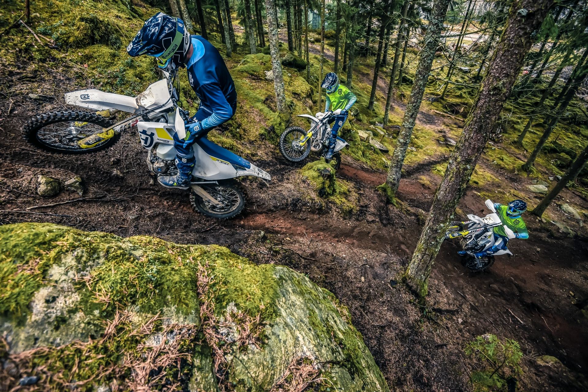
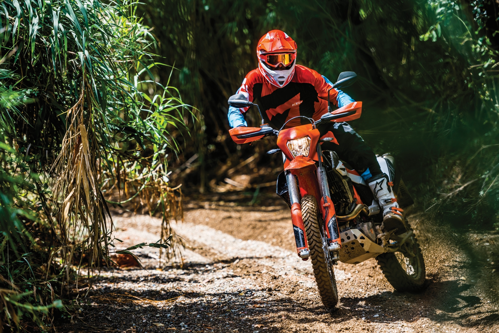
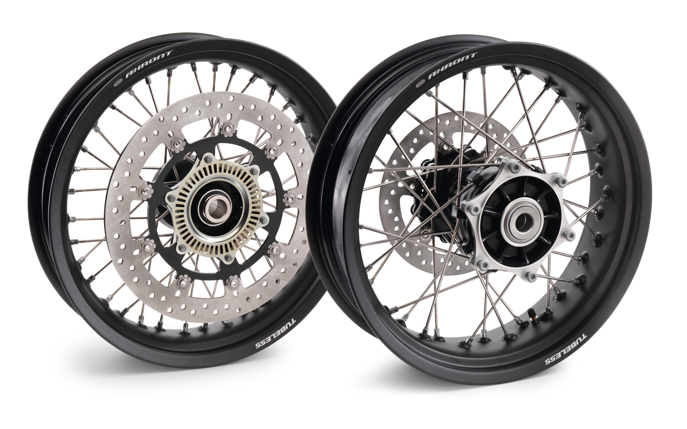
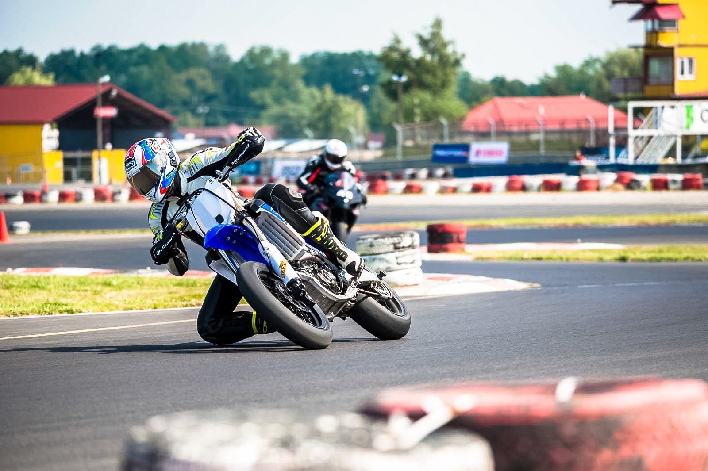
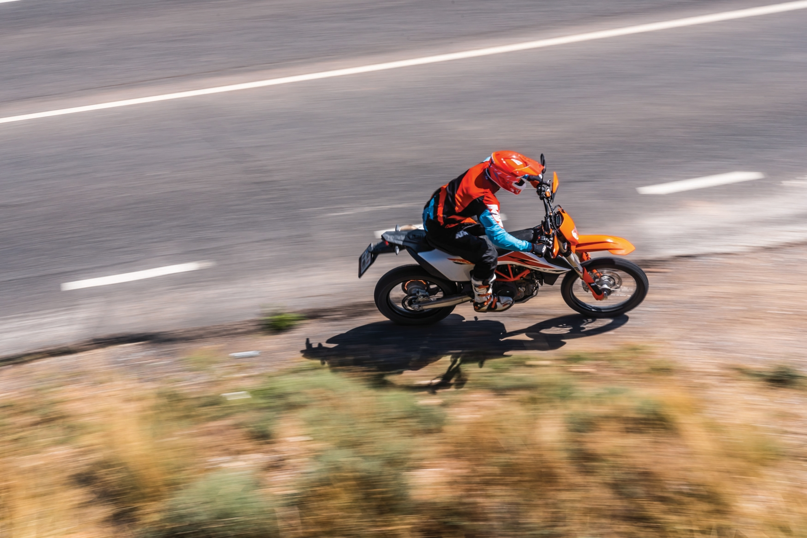
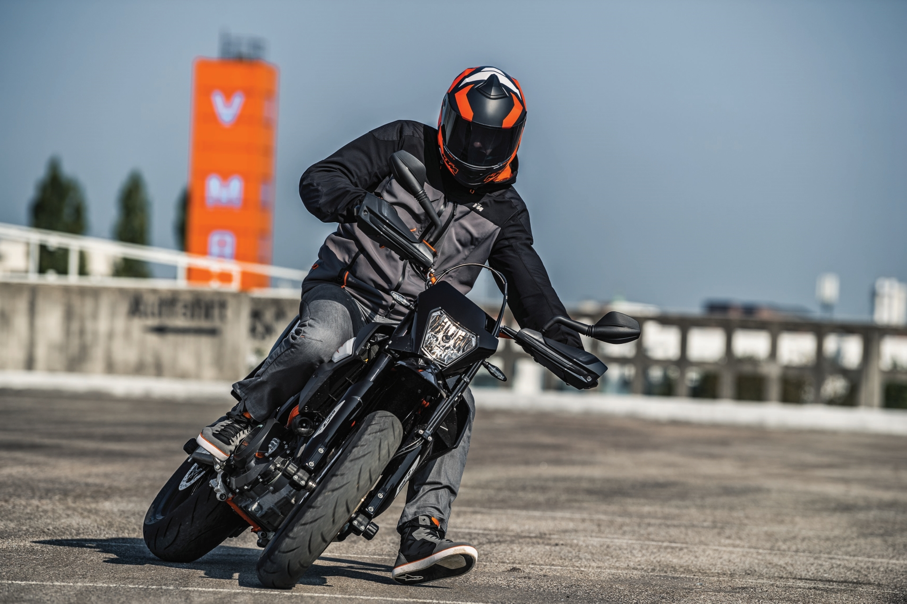

Przeglądając naszą skrzynkę na Facebooku co chwilę przewija się pytanie „co lepiej kupić – Supermoto czy Enduro/Cross”. Nie będziemy ukrywać, nie jest nam łatwo odpowiedzieć na to pytanie w sposób zwięzły i jednoznaczny. Postanowiliśmy zatem wytłumaczyć jakie są różnice oraz wspólne cechy supermociaków i „brudasów”, a także jakie podgatunki wyróżnia się wśród nich. Może dzięki temu podjęcie decyzji będzie łatwiejsze.
Motocykl crossowy
Temat właściwie można zakończyć w jeden sposób. Kup motocykl terenowy i koła supermoto. No i jest w tym sporo prawdy, bo przecież Supermoto to nic innego jak lekka off-roadówka z szosowymi kołami. Sęk w tym, że off-road ma niejedno oblicze, a co za tym idzie supermoto także. Jako bazy można rozróżnić 3 typy motocykli:
Cross
Wyczynowy motocykl do jazdy po torze off-roadowym. Mocno wysilony silnik – najczęściej jednocylindrowy, sztywne zawieszenia o dużym skoku i podzespoły z najwyższej półki. Brak homologacji do jazdy na drogach publicznych i częste interwały serwisowe silnika. Proponowane modele do przeróbki to: KTM SX-F, Honda CRF, Yamaha YZ-F Kawasaki KXF, Suzuki RMZ, Husqvarna FC (TC w przypadku modeli sprzed 2014 roku) Wyczynowy motocykl do jazdy po torze off-roadowym. Mocno wysilony silnik – najczęściej jednocylindrowy, sztywne zawieszenia o dużym skoku i podzespoły z najwyższej półki. Brak homologacji do jazdy na drogach publicznych i częste interwały serwisowe silnika. Proponowane modele do przeróbki to: KTM SX-F, Honda CRF, Yamaha YZ-F Kawasaki KXF, Suzuki RMZ, Husqvarna FC (TC w przypadku modeli sprzed 2014 roku) Wyczynowy motocykl do jazdy po torze off-roadowym. Mocno wysilony silnik – najczęściej jednocylindrowy, sztywne zawieszenia o dużym skoku i podzespoły z najwyższej półki. Brak homologacji do jazdy na drogach publicznych i częste interwały serwisowe silnika. Proponowane modele do przeróbki to: KTM SX-F, Honda CRF, Yamaha YZ-F Kawasaki KXF, Suzuki RMZ, Husqvarna FC (TC w przypadku modeli sprzed 2014 roku)
Motocykl Enduro
Enduro
Tak samo jak crossówka, jest to motocykl wyczynowy i przeważnie mają ze sobą bardzo wiele wspólnych części. Jednak powiedzenie, że są tym samym to spory błąd. Z racji przeznaczenia do jazdy w otwartym terenie, często na dłuższych dystansach i bez dużych skoków jak to ma miejsce na torze motocrossowym, zawieszenie w Enduro jest miększe.
Inna jest także charakterystyka silnika, która jest łagodniejsza, a sam silnik ma wydłużone interwały serwisowe. Do tego dochodzi jeszcze krótsza skrzynia biegów, czasem o większej ilości przełożeń. Bardzo ważny jest również fakt, że Enduro mają homologację do jazdy po drogach publicznych. Proponowane modele do przeróbki: KTM EXC-F, Husqvarna FE (TE przed 2014), Suzuki RMX, Honda CRFX, Yamaha WR, Beta RR.
Dual Sport
Jak sama nazwa wskazuje, są to motocykle dosyć uniwersalne. W skrócie można je opisać jako jednocylindrowe enduro ucywilizowane do jazdy na co dzień, nie tylko w terenie. Nie są tak radykalnie nastawione na sport jak lekkie enduro opisywane powyżej.
Są nieco wygodniejsze i wymagają znacznie mniejszej opieki serwisowej. Są za to cięższe i słabsze. Najczęściej występują w dwóch pojemnościach: ok. 400-450 ccm i ok. 600-700 ccm. Najpopularniejsze modele to Suzuki DR-Z 400, Honda XR 400/650, KTM z serii LC4 i Husqvarna 701/TE 610.
Wystarczy seria
Na początku tekstu wspominałem już, że nie musisz wcale wybierać czy chcesz supermoto czy motocykl cross/enduro. Wystarczy, że kupisz off-roadówke i dobierzesz do niej koła supermoto. Przełożenie zestawu kół trwa ok. 20 minut, a zmęczyć się przy tym nijak nie idzie, więc jedną zagwozdkę masz już rozwiązaną.
Motocykl Supermoto
Pewnie przeglądając jakieś fora czy inne artykuły natkniesz, lub natknęłaś/natknąłeś się już na opisy przeróbek motocykla pod jazdę supermoto obejmujących zmianę hamulców, modyfikacje zawieszenia czy silnika i wiele innych. Jeśli czytasz ten artykuł to znaczy, że prawdopodobnie nie potrzebujesz robić żadnej z tych rzeczy. Wielu ludzi doświadczonych z supermoto nadal nie widzi potrzeby robienia większości z nich, o czym mogą świadczyć te dwa artykuły, które kilka lat temu popełnił Simpson przy okazji przeróbki swojej CRF (pierwszy) (drugi).
Uważaj na przeróbki
Skupmy się zatem na kołach. Często na aukcjach internetowych można znaleźć oferty sprzedaży motocykla z dwoma kompletami kół – dużymi offroadowymi i małymi szosowymi. O ile motocykl jest w dobrym stanie, można to nazwać naprawdę dobrą okazją, bo tak właściwie masz pewność, że koła supermoto będą pasowały do tego motocykla. Jeśli będziesz je kupował/a osobno, czeka Cię wydatek ok. 4-5 tys. za porządny nowy komplet i ok. 1600 – 2000 zł za sensowne używki w dobrym stanie. W tym drugim przypadku, upewnij się, że koła na pewno będą pasowały do danego motocykla.
Jeśli masz wątpliwości, a dokupujesz koła do już posiadanego motocykla, poproś sprzedającego o szerokość piast, felg, opon (jeśli są w zestawie) oraz średnicę osiek i sprawdź czy zmieszczą się w wahacz i widelce. Informacja o tym, że po niewielkich przeróbkach powinny pasować do innych motocykli powinna zwrócić waszą uwagę. Nie ma problemu, jeśli przeróbka polega tylko na dorobieniu innych tulejek dystansujących – ten problem rozwiąże suwmiarka i tokarz. Czasem jednak, tak jak było w moim przypadku, te niewielkie przeróbki okazują się rzeźbieniem z tulejkami, łożyskami i wyosiowaniem kół na nowo. Całe szczęście, zdarza się to rzadko. Wybór używek jest na tyle szeroki, że bez trudu znajdziesz pasujące bez żadnej rzeźby. Pozostaje jeszcze kwestia wyboru rodzaju motocykla. W tym momencie wypadałoby określić jak chcesz go użytkować.
Supermoto z Crossówki
Jeśli przewidujesz tylko jazdę sportową na torze kartingowym i motocrossowym, ew. lekkie enduro, bez wyjazdów na drogi publiczne, najlepszą opcją będzie crossówka. Optymalna będzie czterosuwowa 250-tka ew. dodaj 350-tke z zastępu KTM/Husqvarna. Co prawda mają mniejszą moc i są nieco mniej żywotne niż 450, ale gwarantują szybsze postępy w podnoszeniu techniki jazdy w terenie. 450-tka to za dużo na tor motocrossowy, nie tylko dla początkujących 🙂
Fajnie będzie jak uda Ci się upolować tylne koło SM z obręczą o szerokości 5”, która pozwoli założyć oponę 160 mm. W tym rozmiarze dostępnych jest sporo typowo torowych opon, co może okazać się przydatne gdy złapiesz bakcyla. Najpopularniejsze są felgi 4,25” na które nawija się oponę o szerokości maksymalnie 150 mm. Oczywiście w takim rozmiarze też da się znaleźć dobre kapcie, ale wybór jest mniejszy. Jest jeszcze jedna, bardziej budżetowa opcja na jazdę po asfaltach – opony Mitas Hobby Motard – slicki, które występują w rozmiarze 21/19 czyli na felgi crossowe. Więcej o nich znajdziecie w artykule Simpsona, który podlinkowałem wcześniej.
Supermoto z Enduro
Wybór wyczynowego enduro na pewno daje większą wszechstronność. Dzięki możliwości rejestracji może posłużyć jako transport do szkoły czy pracy oraz zabawka do wściekania się na drodze jak i w warunkach sportowych. Oprócz tego do zalet należy zaliczyć większą trwałość przez mniej wysilony silnik.
Oczywiście nie oczekujcie, że będzie to wygodny sprzęt szosowy na dalsze wycieczki. Wibracje, twarda kanapa, napór powietrza i kiepska sabilność przy wysokich prędkościach nie zachęcają do zwiedzania okolicy. Naturalnym środowiskiem Supermociaków jest przecież miasto, kręte drogi oraz tor kartingowy.
Supermoto z Dual-Sport
Najbardziej „cywilizowany” typ supermoto. Silniki w nich montowane są najmniej wysilone spośród proponowanego grona, a co za tym idzie – wymagają mniejszej opieki serwisowej. Dla przykładu olej w crossówkach czy enduro należy wymieniać co ok. 8-10 mth. W dualach wypada to ok. 4-5 razy rzadziej albo i lepiej w zależności od modelu. Do tego wszystkiego dochodzą wymiany tłoków w wyczynowych motocyklach co ok.60-70 mth w crossówce i mniej więcej 120-150 mth w enduro (interwały przykładowe dla 450-tek i mogą się różnić w zależności od modelu) jeśli motocykl był używany w warunkach asfalt-teren. Duale zazwyczaj przejeżdżają bez otwierania silnika nawet 5-6 razy więcej.
Ceną za wydłużenie żywotności jest mniejsza moc i większa waga. Nadal są to jednak bardzo żwawe i zwinne motocykle. Na próżno szukać podobnej lekkości prowadzenia u jakichkolwiek innych motocykli szosowych, jednak w warunkach sportowych na pewno pod względem poręczności wypadną gorzej niż wyczynowe rodzeństwo. Swój udział w tym mają także miększe zawieszenia. Nie do końca jest to wadą. W użytku na co dzień są po prostu wygodniejsze i pozwalają nawet na krajoznawcze kręcenie się wokół komina!
Gdy brak zdecydowania…
Jeśli nadal nie możesz się zdecydować w jaki sposob chcesz użytkować swój nowy motocykl, a jeszcze nie rozbiłeś banku, żeby kupić kilka modeli celowałbym właśnie w Duala. Jeśli kupisz zadbany egzemplarz, na pewno nie pożałujesz. Swoją drogą, tego typu motocykle najłatwiej dorwać z dwoma kompletami kół, producenci nierzadko oferowali jeden model w konfiguracji SM lub Off-Road co tylko potwierdza tezę o wszechstronności.
Jeśli masz już upolowany swój typ, gwarantujemy, że po każdej solidnej jeździe niemalże eksplodujesz z podjarki . Tylko ostrzegamy, zarówno off-road jak i jazda po torze mocno uzależniają i po jakimś czasie chce się więcej i więcej. Zdecydowanie warto zanurzyć się w oba światy, zwłaszcza, że to nieszkodliwy nałóg. Jeśli nie udało mi się wyczerpać twojej ciekawości i rozwiać wątpliwości, pisz w komentarzu w czym możemy pomóc!